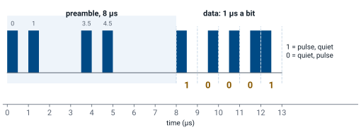
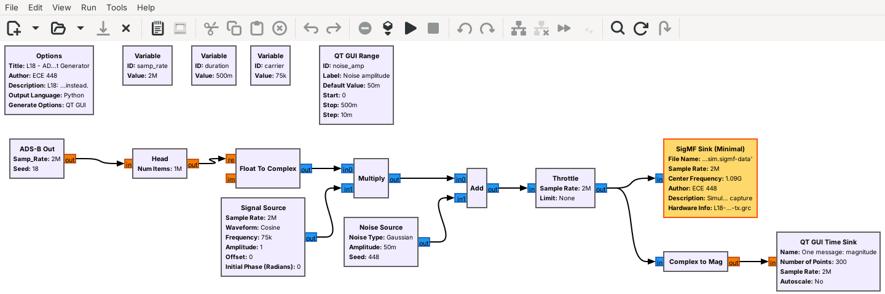
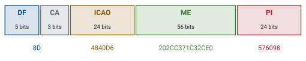
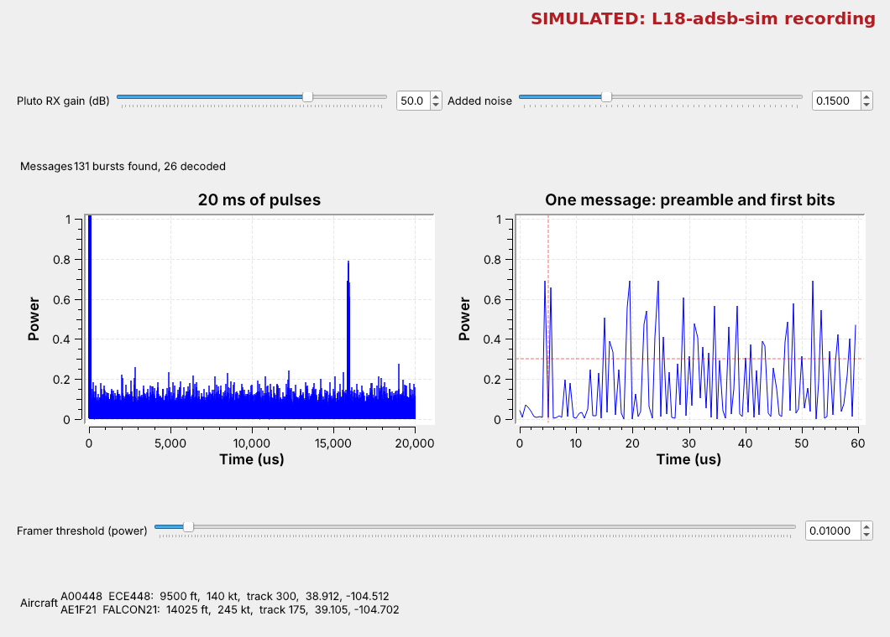
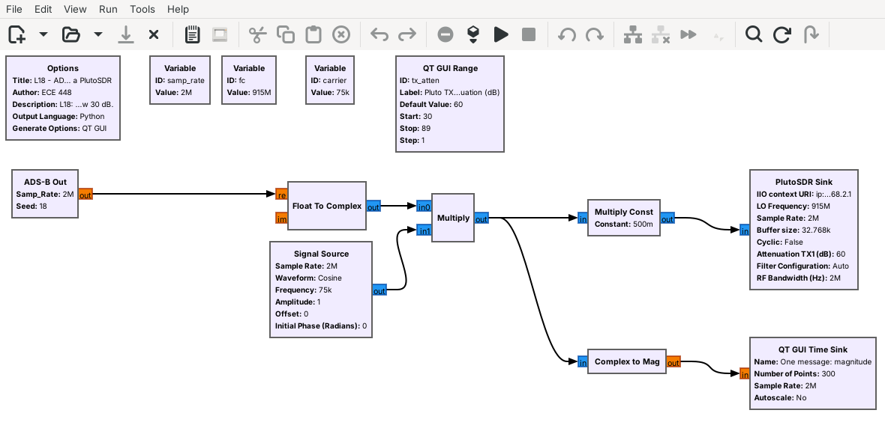

L18 - ADS-B#
ADS-B
We generate ADS-B messages as pulses, receive them on a PlutoSDR at 1090 MHz, and decode each aircraft with gr-adsb.
Lesson 18 · Module 6: Waveform Applications & RF Reverse Engineering · Dr. Neil Rogers
Slides
Learning Objectives
- I can receive and decode ADS-B messages from aircraft transponders.
Aircraft Overhead

Run
L18-adsb-tx.grc, thenL18-adsb-rx.grc.Each spike is one message; the table fills with aircraft.
Every airliner over Colorado Springs announces its identity, altitude, position, and velocity several times a second on 1090 MHz, and a PlutoSDR at a window can hear them. The figure is today’s receiver, L18-adsb-rx.grc, playing a simulated recording of four aircraft near USAFA. Each spike in the left plot is one message, 120 µs long; the right plot zooms in on one of them; and the table at the bottom fills in as gr-adsb, GNU Radio’s ADS-B module, decodes each message.
After a first look on the air, the topics and their order follow the 2025 slides: what ADS-B is, its pulses, a generator that builds them, the message, and the tools that decode it. We build the generator in GNU Radio, decode it with gr-adsb’s blocks, then point the receiver at the sky.
ADS-B and Mode S
Mode S transponders reply to radar on 1090 MHz.
ADS-B has them broadcast on their own, about twice a second.
The common form is the extended squitter, Downlink Format 17.
Automatic Dependent Surveillance–Broadcast (ADS-B) lets an aircraft tell everyone around it where it is. “Automatic” means no one has to ask, “dependent” means the position comes from the aircraft’s own GPS, and “broadcast” means anyone can listen: air traffic control, other aircraft, and us.
It grew out of Mode S (Mode Select), the transponder system that answers a secondary radar’s interrogation on 1030 MHz with a reply on 1090 MHz. Mode S defines many message formats, and ADS-B adds one more: an extended squitter, a 112-bit message the transponder sends without being asked. Its Downlink Format (DF) number is 17; DF 18 is the same message from a device that is not a transponder, such as a ground vehicle. In the US, small aircraft below 18,000 ft may instead use UAT on 978 MHz, a different waveform that this lesson does not cover. The 1090 MHz Riddle, by Junzi Sun, is the reference the slides use for every detail of the message.
Find It on the Air
In
L18-adsb-rx.grc, disable the SigMF Source and Throttle, and enable the PlutoSDR Source and AGC.At 1090 MHz, short spikes appear in the left plot and aircraft fill the table.
The first look uses the same flowgraph as the rest of the lesson, with the PlutoSDR in place of the recording:
Open
L18-adsb-rx.grc, select the SigMF Source and the Throttle, and press D to disable both. Select the gray PlutoSDR Source and AGC and press E to enable them. The Pluto’s URI isip:192.168.2.1, its center frequency is the variablefc, 1090e6, and it samples at 2 MS/s. The AGC scales the signal so the strongest recent pulses reach a power near 1, whatever the gain and the distance, so the plots and the Framer threshold keep their meaning.Put the Pluto’s antenna on its RX port and the Pluto at a window, and run the flowgraph.
Watch the 20 ms plot. ADS-B is not a steady carrier: it is short spikes of power, scattered in time, more of them when aircraft are close. Each one is a message.
Watch the Aircraft label. Each aircraft appears once gr-adsb has decoded a message from it, and its position appears once it has decoded an even and an odd position message, as the ME frame explains.
If nothing appears in a few minutes, raise the Pluto RX gain slider and try another window. On the SDR, at the end of the lesson, sets the gain and the Framer threshold.
The Physical Layer

Each bit is 1 µs: a 1 is pulse then quiet, a 0 is quiet then pulse.
That is pulse-position modulation (PPM).
ADS-B turns the carrier on and off, which is amplitude modulation, and the bit lives in where the 0.5 µs pulse sits within its 1 µs: a 1 puts the pulse in the first half and a 0 in the second. That is pulse-position modulation (PPM), and it sends 1 million bits a second. Every bit holds exactly one pulse, so a receiver decides each bit by comparing the two halves, and it never needs to know how strong the aircraft is.
Each message starts with an 8 µs preamble of four pulses, at 0, 1.0, 3.5, and 4.5 µs, which no run of data bits can imitate. The 112 bits follow, so a whole message lasts 120 µs. At 2 MS/s every half bit is one sample, which we call a chip: the preamble is 16 chips and the message 224.
Message Explorer
The explorer draws three real messages as the chips a receiver sees at 2 MS/s: the identification message from Sun’s book, and a position and a velocity message from today’s generator. The receiver compares the two chips of each bit, and the parity check decides whether to keep the message. Start with the first 16 bits and watch each bit’s pulse sit in one half of its microsecond. Then raise the noise until a pulse in the wrong half wins, a bit turns red, and the parity fails.
The ADS-B Out Generator

The ADS-B Out block writes PPM chips for four aircraft.
The carrier, noise, and a SigMF Sink follow, as on the 2025 slides.
The slides build their test signal in steps: PPM, then AM on a carrier, then noise. L18-adsb-tx.grc does the same in GNU Radio. The ADS-B Out block is an Embedded Python Block, the kind the L11 lesson built, and it writes the chips of every message for four simulated aircraft near USAFA. Float To Complex and a Multiply put those chips on a carrier 75 kHz from the center, the Noise Source adds noise, and a SigMF Sink writes 0.5 s to L18-adsb-sim.sigmf-data with its sample rate and the 1090 MHz center frequency in L18-adsb-sim.sigmf-meta, whose description says Simulated.
The aircraft send ten or more times as often as real ones do, so the half second holds about 75 messages. Nothing transmits: the last block is a file sink. A second flowgraph, L18-adsb-tx-pluto.grc, sends the same aircraft from a PlutoSDR at 915 MHz into a cable through the 30 dB attenuator instead, never at 1090 MHz; On the SDR uses it.
Inside the PPM Block
out = [1,0,1,0,0,0,0,1,0,1,0,0,0,0,0,0] # preamble
for x in bits: # 112 bits
out += [1, 0] if x else [0, 1] # PPM
The block builds 88 bits of message, appends 24 parity bits, and makes chips.
Double-click it in GRC to read or edit the code.
The slides’ fourth objective is to develop a PPM modulation block, and the code above is the heart of ours: the preamble’s 16 chips, then two chips for each of the 112 bits. Around it, the block builds each message from the aircraft list at the top of its code, using the encodings the next frames describe, and computes the 24 parity bits from the first 88. It then places each message at a random time, so messages from different aircraft sometimes overlap, as they do in the sky.
Double-click the block in GRC and choose Open in Editor to see all of it. The list AIRCRAFT holds each aircraft’s address, callsign, position, altitude, speed, and heading; add a fifth aircraft there, run the generator, and the receiver shows it.
Message Structure

ICAO is the aircraft’s 24-bit address, and ME is the 56-bit message.
PI is 24 parity bits; a message that fails them is dropped.
Bits |
Field |
What it holds |
|---|---|---|
1–5 |
DF |
Downlink Format: 17 for ADS-B |
6–8 |
CA |
transponder capability |
9–32 |
ICAO |
the aircraft’s address, unique worldwide |
33–88 |
ME |
the message: identity, position, or velocity |
89–112 |
PI |
parity |
The slides’ example, 8D4840D6202CC371C32CE0576098, comes from Sun’s book. Its first byte, 8D, is DF 17 and CA 5; the aircraft’s address is 4840D6; and its ME field decodes to the callsign KLM1023. The parity bits are computed from the first 88 with a fixed 25-bit generator, and the receiver repeats that calculation: if a single bit arrived wrong, the result disagrees and the message is dropped. gr-adsb’s Decoder does this for us.
What the ME Field Carries
Type code |
Message |
|---|---|
1–4 |
identification: callsign |
9–18 |
airborne position, barometric altitude |
19 |
velocity: speed, track, climb rate |
The first 5 bits of the ME field are its type code, which says how to read the other 51. An identification message carries the callsign as eight 6-bit characters. An airborne position message carries the altitude in 25 ft steps and a compressed latitude and longitude. A velocity message carries the east and north speeds, from which the decoder finds ground speed and track, and the climb rate. Sun’s book lists every type code; these three are the ones gr-adsb’s table shows.
Position takes a little care. To fit in 34 bits, it is sent in Compact Position Reporting (CPR), which gives the position within one of many zones but not which zone. Aircraft alternate two zone sizes, called even and odd, and a receiver either pairs an even and an odd message or uses a reference position it already knows within 180 nautical miles. gr-adsb pairs them: once it holds an even and an odd message from the same aircraft, received within 30 s of each other, it works out the zone and the position, wherever the receiver is. That is why an aircraft’s position appears a moment after its callsign.
The Receiver

Complex to Mag^2 turns the samples into pulse power.
gr-adsb’s Framer, Demod, and Decoder do the rest.
The receiver is short, because PPM needs only the size of each sample, not its phase. The SigMF Source plays the recording and the Throttle paces it at 2 MS/s; for live signals, the PlutoSDR Source and the AGC replace both. An Add mixes in noise from the Added noise slider. Complex to Mag^2 gives each sample’s power, \(I^2 + Q^2\), which is the pulse train; gr-adsb’s examples use power rather than magnitude, so we do too.
Two QT GUI Time Sinks show it. The left one runs freely over 20 ms, so each message is a spike. The right one is triggered: it waits until the power crosses 0.3, then freezes 60 µs starting just before that point, so we see the preamble’s four pulses and the first bits of one message. The three gr-adsb blocks, under ADS-B in GRC’s block list, decode it; radioconda installs them as the package gnuradio-adsb.
Decoding Step by Step
The Framer finds four preamble pulses with quiet between them.
The Demod compares each pair of chips; the larger half is the pulse.
The Decoder checks the parity, then reads the fields.
Each gr-adsb block does one step. The ADS-B Framer watches for power above its Detection Threshold, set by the Framer threshold slider. At each pulse it checks the next 16 chips against the preamble: chips 0, 2, 7, and 9 must be more than half as strong as the first pulse and the others weaker. A match gets a tag that marks the start of a burst. The ADS-B Demod reads the 112 chip pairs after each tag, calls a bit a 1 when the first chip of its pair is larger, and sends the bits on as a message. The ADS-B Decoder checks the parity and drops a message that fails; its Error Correction is set to None, so it does not try to repair one. It then reads the extended-squitter fields (DF 17, and DF 18 from devices that are not transponders) and keeps a list of aircraft.
With its Print Level set to Verbose, the Decoder prints every field of every message in the GRC console, for example Callsign: KLM1023; on the air the console fills quickly, so read the table. The console’s Heading is measured counterclockwise from east, and the Aircraft Table turns it into a compass track, the number a flight tracker shows. The Decoder’s Brief setting draws a live table in a terminal window instead, which GRC’s console cannot show. Our Aircraft Table block decodes nothing; it shows what the Decoder sends it. The Messages label counts the bursts the Demod found and the messages the Decoder decoded into an identity, a position, or a velocity, and both start over when a slider moves.
What Noise Does

Raise Added noise and watch the weak aircraft disappear first.
Raise the Framer threshold above the noise, and the strong ones come back.
The figure raises the added noise to 0.15. The floor of the 20 ms plot climbs until only the two strongest aircraft stand clearly above it. The weaker two still send, but a noise peak now beats a pulse in some chip pair of almost every message, the parity fails, and they drop out of the table. Even the strong two decode less often: the Framer’s threshold, 0.01, is now below the noise, so the Framer sees pulses everywhere and finds fewer real preambles.
Now raise the Framer threshold to 0.1, above most of the noise and below the strong pulses. The two strong aircraft then decode about twenty times as often, and the weak two stay gone, because their pulses no longer stand above the threshold. A real receiver sees the same thing with distance. A nearby aircraft decodes cleanly, a distant one decodes only now and then, and one past the horizon not at all.
Two GNU Radio Modules
gr-adsb has the Framer, Demod, and Decoder blocks, and radioconda ships it.
gr-air-modes is the other Mode S module for GNU Radio.
The slides list three tools, and one of them, gr-adsb, by Matt Hostetter, is what we use: an out-of-tree GNU Radio module that radioconda packages as gnuradio-adsb. On the recording it lists all four aircraft with the callsigns, altitudes, speeds, tracks, and positions in the generator’s AIRCRAFT list. gr-air-modes, by Nick Foster, is the other GNU Radio module for Mode S; its modes_rx program decodes from a radio and can feed a map, and we name it here so you know it when you see it. Optional: outside GNU Radio, dump1090 and SDRangel, the slides’ other two tools, decode ADS-B, and SDR Flex or GQRX with an RTL-SDR gives the same first look as the Pluto.
Key Point
ADS-B sends 112-bit messages on 1090 MHz as pulses: each bit is one 0.5 µs pulse in the first or second half of its microsecond. The receiver finds the preamble, compares chip pairs, and keeps messages whose parity checks.
On the SDR

For live aircraft, set
fcto 1090e6 and only receive.Your own aircraft go out from
L18-adsb-tx-pluto.grcat 915 MHz, into a cable.
Live aircraft. With the PlutoSDR Source and AGC enabled and fc at 1090e6, start the Pluto RX gain near 50 dB. The AGC brings the strongest pulses near a power of 1. Read the noise floor on the 20 ms plot and set the Framer threshold above it and below the spikes; if the Messages label counts bursts but few decode, the threshold is too low, and if weak aircraft never appear, it is too high. Live traffic needs a trigger level of its own: lower the right-hand time sink’s trigger level, in its settings, until it freezes on preambles and not on noise. A quarter wavelength at 1090 MHz is about 6.9 cm, so a small antenna works, and a window facing the approach to Colorado Springs or Denver works best.
Your own aircraft. We never transmit on 1090 MHz. L18-adsb-tx-pluto.grc sends the generator’s aircraft from a PlutoSDR at 915 MHz instead, into a cable from the Pluto’s TX port through the 30 dB attenuator to a Pluto’s RX port: its own, or a second Pluto’s. Or, if your instructor says so, it goes over the air at 915 MHz at low power. Run it, set fc in L18-adsb-rx.grc to 915e6, and run the receiver with its PlutoSDR Source and AGC enabled; the generator’s aircraft fill the table at the default settings. With two Plutos on one laptop, give each flowgraph its Pluto’s usb: URI, as Lesson 17 does. On one Pluto, the transmitter and receiver share one sample-rate clock, so keep both at 2 MS/s, start the transmitter first, and expect a brief glitch when the receiver starts. Never set TX attenuation below 30 dB or change the slider’s range.
Anyone may receive ADS-B. Transmitting it is another matter: 1090 MHz carries the replies that air traffic control and collision-avoidance systems depend on, and nothing in a message proves who sent it, which is why false targets are a research topic (the Magazu AFIT thesis linked below).
Downloads
L18-adsb-tx.grc: the ADS-B Out generator. Writes
L18-adsb-sim.sigmf-dataand.sigmf-meta, 0.5 s (8 MB) of four simulated aircraft at 2 MS/s, then stops. Run it once. No hardware needed.L18-adsb-tx-pluto.grc: the same generator, sent from a PlutoSDR at 915 MHz into a cable through the 30 dB attenuator, or, if your instructor says so, over the air at 915 MHz at low power. Runs until you stop it. Needs a PlutoSDR.
L18-adsb-rx.grc: the receiver, with the pulse plots, gr-adsb’s Framer, Demod, and Decoder, the Aircraft Table, the Added noise and Framer threshold sliders, and a disabled PlutoSDR Source and AGC for live signals. Needs gr-adsb, which radioconda includes.
Put the flowgraphs in one folder and run the generator first; GRC runs a flowgraph from its own folder, so the receiver finds the recording there. The ADS-B Out and Aircraft Table blocks are Embedded Python Blocks saved inside the .grc files. If GRC marks the ADS-B blocks red, gr-adsb is missing: in the radioconda prompt, mamba install gnuradio-adsb, then restart GRC. GRC 3.10 marks the SigMF Source (Minimal) and SigMF Sink (Minimal) blocks as deprecated and shows a warning when the flowgraph loads; the warning is expected and harmless, and both blocks work.
What this lesson follows. The topics and their order come from the slides. The hands-on steps follow the references the slides list and the documentation of the tools:
The 1090 Megahertz Riddle, Junzi Sun (PDF): the message, the type codes, the parity, and CPR. The slides also cite the DRWXR and HABR ADS-B decoding write-ups, which cover the same ground as Sun’s book and are not repeated here. Sun’s earlier version is the ADS-B Decoding Guide (PDF).
Magazu, AFIT thesis on ADS-B false targets (PDF): why ADS-B is open to spoofing.
gr-adsb and its README, the module our receiver uses, with its example flowgraphs, and gr-air-modes, the other GNU Radio module.
GNU Radio wiki, Embedded Python Block, for the ADS-B Out and Aircraft Table blocks, and the wiki pages of the other blocks, which have the same names as the blocks, including PlutoSDR Source and PlutoSDR Sink.
Summary
Idea |
What to know |
In GNU Radio |
|---|---|---|
ADS-B |
Mode S extended squitter, DF 17, 1090 MHz |
the PlutoSDR Source at 1090 MHz |
PPM |
1 µs a bit; a 1 is pulse then quiet |
2 MS/s: two chips a bit |
Preamble |
pulses at 0, 1.0, 3.5, 4.5 µs |
the ADS-B Framer and its threshold |
Message |
DF, CA, ICAO, ME, PI: 112 bits |
the ADS-B Demod and Decoder |
Type code |
1–4 callsign, 9–18 position, 19 velocity |
the Aircraft Table |
Parity |
24 bits; a failed message is dropped |
the Messages label |
Noise |
weak aircraft drop out first |
the Added noise slider |
Your own aircraft |
sent at 915 MHz, never 1090 |
|
Modules |
gr-adsb, gr-air-modes |
|
Practice
Looking Ahead
Lesson 19 decodes AIS, the ships’ version of ADS-B.
The L18–L19 Lab decodes live aircraft and a recording of ships.
Today we built ADS-B messages as pulses, received them as power with a triggered plot, and decoded them with gr-adsb, whose blocks find the preamble, compare chip pairs, and check the parity. Lesson 19 turns to AIS, which does the same job for ships on VHF, with FM in place of pulses and a CRC in place of Mode S parity.
The L18–L19 Lab follows Lesson 19. You build an ADS-B receiver on the PlutoSDR yourself with gr-adsb, decode the aircraft overhead and compare them with a public flight tracker, then build an AIS receiver and decode a recording of ships.